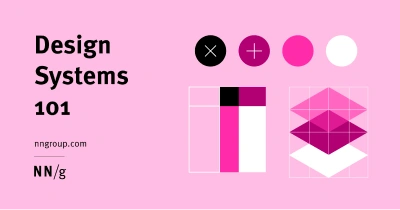
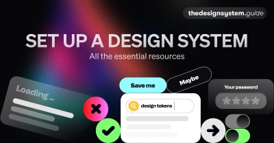
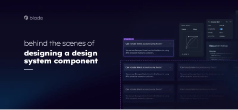
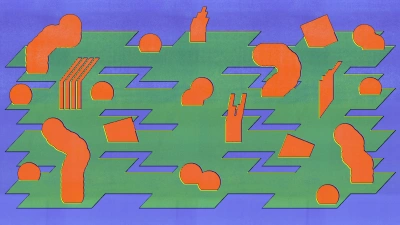
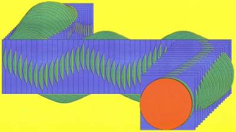

Design systems
A design system is a set of standards to manage design at scale by reducing redundancy while creating a shared language and visual consistency across different pages and channels.
Design Systems 101

An introduction to Design Systems from Nielsen Norman Group. Why to use them, why not to use them. What the elements are that comprise a design system and how to build adoption for one
The design system guide

A huge resource of design system ‘stuff’. Newsletters, interviews, case studies, examples and lots more
Behind the scenes of designing a design system component

An indepth look at the process involved in the creation of a from-scratch, design system component
Design systems 101: What is a design system?

From the Figma blog. Understand the basics of design systems, what they are, how they work, and how they can change the way you design.
The future of design systems is marketing

Design systems promise consistency, efficiency, and scalability, but realizing these benefits hinges on widespread usage. To get your entire team on board, you’ll need to tap into your inner marketer and craft a compelling adoption strategy.
AI and Design Systems
A deep dive from Brad Frost on the role of AI in developing and managing design systems.
Config 2024: Design System Best Practices
Take a dive into all things design systems— from establishing solid foundations like library structure and variables, to tips and best practices to optimize your system for growth and adoption. Ana, Chad, and Alexia will share their collective insights from working with design systems firsthand and helping thousands of teams set up their libraries for success.
2024's Config conference featured a number of talks on design systems. Check out the playlist to see them all (YouTube).
Your next component - Dan Mall (Config 2023)
The next component your design system team chooses to take on is crucial. It has an outsized effect on how well the design system will be received, adopted, and scale into the future. Whether you're starting, restarting, or reinvigorating your design system, Dan will show you you'll learn how to be both strategic and tactical with your design system approach.